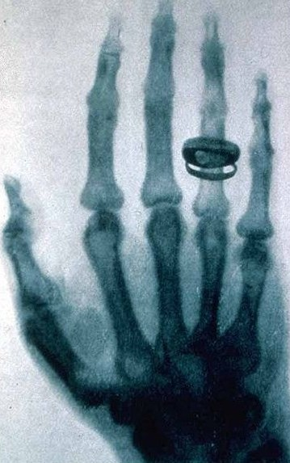

2) Les ultraviolets, les rayons X et les rayons Gamma
A. Les Rayons Ultra-Violets
L'histoire des ultra-violets
Un physicien du nom de Johann Wilhelm Ritter découvre en 1801 un rayonnement qui est en dehors du spectre des ondes visibles. Il découvre alors la région de l'ultraviolet. On appelle egalement le rayonnement ultra-violets lumière noire car ce rayonnement est invisible à l'oeil nu. Le rayonnement électromagnétique des ultra-violets a une longueur d'onde plus courte (donc une fréquence plus grande) que celle de la lumière visible.
L'utilisation des ultra-violets
Suite à cette découverte, les lampes UV ont été créées, permettants de nombreuses nouvelles analyses : des minerais et de gemmes ou, associés à des colorants UV, des billets de banque. Ils sont utilisés par ailleurs en chromatographie.
Dans le domaine professionnel
On utilise des lampes UV pour stériliser des zones et des outils de travail, dans le domaine médical, comme dans le domaine biologique. Dans la recherche biologique, on les utilise aussi pour des expériences comme dans le domaine photochimique. Au niveau industriel, on les utilise pour la fabrication de semi-conducteurs, et le séchage d'encres.
B. Les Rayons X
Les rayons X ont été découverts par Wilhelm Conrad Röntgen qui reçu le prix Nobel de Physique en 1901.

Wilhelm Röntgen et la radiographie qui a mené à la découverte des rayons X
L'utilisation des rayons X
Les rayons X ont fait avancer au niveau médical le monde: la radiographie médical et dentaire. Elle permet de transformer des ondes électromagnétiques en électrons. Cette machine utilise pour cela un tube à vide qui va condenser une image sur l'écran, avec une caméra supplémentaire.
C. Les rayons Gamma
En Paul Villard, un physicien et chimiste français découvre un nouveau rayonnement. Celui-ci provient du radium. Pour qu'il y ait la production d'un rayonnement Gamma, il doit y avoir la désintégration du noyau atomique.
Il peut traverser une fine plaque de plomb et est insensible aux champs magnétiques. Ce rayonnement est de la même nature que les rayons X mais est d'origine et de fréquence différentes.
L'étude de sources Gamma naturelles (source astrophysique) nous permettent de mieux comprendre la structure de l'Univers.
L'utilisation des rayons Gamma, et leur risques
On utilise ces rayons dans la joaillerie pour transformer, par exemple, le blanc topaze en bleu topaze. On les utilise également dans le domaine médical, contre les tumeur cancéreuses, en focalisant ces rayons sur une zone précise du corps pour détruire ces cellules cancéreuses, c'est la radiothérapie.
Les risques liés à l'exposition de ces rayons (suite à un accident nucléaire par exemple) sont des brûlures, des mutations génétiques et des cancers.